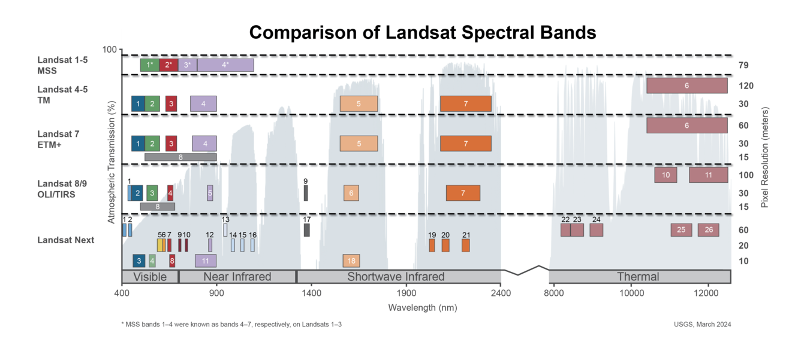

GEOG*2420 The Earth From Space (F25)
Lab Assignment 1
Assigned: Week of September 29
Due: Week of October 26 (before the beginning of your regularly scheduled lab session)
Total Marks: 29 marks (worth 10% of final grade)
Introduction
The purpose of this lab exercise is to familiarize students with multispectral imagery data sources used in Earth Observation applications and with the creation of colour-composite images. In this lab, we will work with an images acquired by two of the latest Landsat satellites: Landsat-8 and Landsat-9. Landsat-8 was launched in 2013 and Landsat-9 was launched in 2021. These follow a series of older Landsat satellites that together make up the longest running, continuous stream of earth observations, stretching back to the 1970's. In 2008, NASA and the USGS decided to open the entire Landsat archive - including historical imagery and any future Landsat missions - to the public. This means that imagery acquired by these sensors is available to the global public free of charge, which has been a game-changer in remote sensing, environmental sciences, natural resources management and other applications!
The sensors on board the various Landsat satellites are multi-spectral sensors, meaning that they acquire imagery using several spectral bands. A spectral band is a dened range of wavelengths to which a particular light detector is sensitive. For example, a multi-spectral sensor may include a "green" band that is sensitive to wavelengths ranging from 530nm to 590nm (which is approximately what we perceive to be green). The Landsat-8 and Landsat-9 satellites each have a near-identical copy of the Operational Land Imager (OLI) sensor. The OLI has ve spectral bands in the visible portion of the electromagnetic (EM) spectrum ('coastal', blue, green, red and a broadband panchromatic band), one near infrared, three shortwave infrared, and two thermal infrared bands. These are slightly dierent than the older Landsat sensors, since improvements were made with the launch of Landsat-8 and -9. The positions and widths of these spectral bands along the EM spectrum is shown in Figure 1.

Figure 1 compares the spectral bands on the OLI instrument with the Thematic Mapper (TM, on board Landsat-4 and Landsat-5) and the Enhanced Thematic Mapper Plus (ETM+, on board Landsat-7). Notice that the width of the spectral bands has changed with later sensors. This will not be important in this lab, but we will discuss this design decision and what it means for applications later in the course.
Learning Objectives
By the end of this lab, you will have experience with the following:
- Querying and downloading Landsat imagery on the USGS Earth Explorer platform
- Displaying RGB composites, applying basic colour stretches
- Interpreting Landsat imagery over various land cover type
- Create basic maps using QGIS
Readings and Resources
The following materials, combined with your textbook, can be used as background materials and to help in answering the assignment questions.
Before you begin
IMPORTANT INFORMATION: The computers in the Geography Undergraduate Computing Lab (Hutt 236), have QGIS installed. If you are planning to carry out these assignments on your own computer, then it is important that you have QGIS. This software is open-source, freely available, and works on Windows, MacOS, and Linux operating systems. It can be downloaded from the Internet and instructions can be found on the QGIS homepage (link provided above).
What you need to hand in
You will submit a report summarizing the answer to each of the questions in the following exercise along with the necessary colour images to the CourseLink drop box associated with the assignment.
Part 1: Acquiring Satellite Imagery
If you don't already have an account for the USGS Earth Explorer platform, do so by navigating to https://earthexplorer.usgs.gov, clicking on Login, and then Create New Account. Fill in the necessary details. You should receive an email shortly with a conrmation once your account is created (check your Spam folder just in case!).
Once your account is active, you can now sign in, which should bring you to a search window with a large map. For me, it zoomed to Sioux Falls, South Dakota, by default. That is where the USGS Earth Resources Observation and Science (EROS) centre is located. USGS-EROS is responsible for dealing with Landsat imagery and distributing it to the world.
Pan the map over to southwestern Ontario, and zoom into the University of Guelph. Place a single point on the University of Guelph campus by clicking somewhere on it. You should see one Lat/Lon coordinate with a red X beside them under the Polygon heading. You can delete the point by clicking the X (e.g., in case you want to re-draw your region of interest). Once you have the search location set up to your liking, scroll to the bottom of the page. Click on the Cloud Cover tab, and adjust the slider until it says Cloud Cover Range: 0% - 1%. This means that we will only search for images with no or hopefully very little cloud cover.
Click on Data Sets to proceed to the next step. Here, you will choose which datasets (most of which are remote sensing imagery) you will search for. Click on the + beside Landsat to expand the Landsat menu. Expand the Landsat Collection 2 Level-2 menu as well. Notice the small icon with an i in a blue circle beside the various Collection-2 Level-2 datasets. Click on the one next to Landsat 8-9 OLI/TIRS C2 L2 to open a new tab with information on the Landsat 8 and 9 Collection-2 Level-2 datasets.
Q1.1 What is specically meant by the term "Surface Reectance"? (1 Mark)
Q1.2 What factors might cause the "true" surface reectance to be dierent than what is actually measured by the satellite sensor? (2 Marks)
Go back to EarthExplorer and click the box beside the Landsat-8 and -9 Collection-2 Level-2 datasets to search for this product over the area you delineated in the previous step. When you are ready, click on "Results >>" to see the results of the search.
Q1.3 How many Landsat-8 images were returned by the search? How many Landsat-9 images? On which dates were each of the images acquired? (2 Marks)
Q1.4 Press the "Show metadata and browse" button (5th button from left) for one of the images within the results. What is the world reference system (WRS) path (i.e. column) and row number of the Landsat scene containing Guelph? (1 mark)
Q1.5 Name two changes you could make to your search parameters in order to increase the number of Landsat images returned by your search. (2 Marks)
In your search results click on the footprint icon beside one of the images in the Results tab to see the footprint (spatial extent) of this image. The area on the ground covered by the image is sometimes referred to as the scene.
Q1.6 Describe the geographical area included in the scene shown in the footprint. Which part of the countries/provinces/states are included in these scenes? What notable land cover features are included in these scenes? (2 Marks)
Choose one of the Landsat-9 images and click on the Download options icon for the image. It is the 5th icon from the left (where the 1st icon is the footprint one you clicked earlier). A pop-up should appear (make sure pop-ups are not being blocked by your browser!) showing several download options. Click the Select Files option on the Level-2 Surface Reectance Bands row (top). This should show a popup giving a list of files that are included with this scene, each of which has an on/o switch beside it. Switch all the files off except for SR_B2, SR_B3, SR_B4 and SR_B5. These are images from Spectral Band 2, Band 3, Band 4 and Band 5. Note that the download may take a few minutes. Be patient and do not close your browser tabs before the downloads start. Once the downloads are nished, you should have the four .TIF files in your Downloads folder. Move these to a folder you created for this lab assignment.
While your images are downloading, and before starting a QGIS project, read about the Landsat-9 mission at this link (https://www.usgs.gov/landsat-missions/landsat-9).
Q1.7 What are the full names of the two science instruments on board the Landsat-9 satellite? How are they related to the science instruments carried by Landsat-8? (2 Marks)
Q1.8 Which of these two science instruments are of interest to us if we are interested in monitoring surface reectance in the visible and near infra-red portions of the electromagnetic spectrum? (1 Mark)
Part 2: Visualizing Landsat Imagery in QGIS
Open QGIS and start a new project. Before doing anything, save your project to the folder you set up for this lab (the same folder where you're storing the images you downloaded above).
We are going to display the Landsat image you downloaded as a series of red-green-blue (RGB) composites. An RGB colour composite is simply a combination of three spectral bands assigned to the red, green and blue channels of your computer's display. To display an RGB composite, QGIS requires that the bands are stored together in a single file, i.e. as a multi-band raster. When you downloaded the Landsat data, you should have noticed that the spectral bands are all stored as separate files with the sufixes B2.tif, B3.tif, and so on, so this is something we'll have to take care of before we can create our RGB composite. One option could be to combine all the bands we want to use and save this as a new multi-band GeoTIFF file. This is fine, but one disadvantage is that we are essentially just duplicating the data and taking up more disk space in the process.
The GDAL (GeoData Abstraction Library) toolbox included in QGIS has an interesting solution to this problem called virtual rasters. A virtual raster is a very small file with information about a raster, but without containing any of the actual raster data itself. Instead, the virtual raster file points to the original data les, and essentially tricks software like QGIS into thinking it is the actual raster. So, we will create a virtual raster using the Landsat data you downloaded to combine the bands into one file, without actually copying any of the actual data.
Using either the Layer > Add Layer command from the top menu or the le browser on the top-left panel of your screen, add the rasters corresponding to B2, B3, B4 and B5 to your map. Notice that they all open up as separate greyscale image layers in your map. Feel free to switch them off, since we won't be visualizing them separately. Keep them in your layers tab, because this will make it easier to access them in the following steps.
Now that our bands are available in the layers tab, we are ready to create the virtual raster dataset. Open the processing toolbox (if it's not already visible on the right-hand side of your screen, go to Processing > Toolbox and it should appear). Expand the GDAL menu in the toolbox, then open Raster Miscellaneous and double-click on Build virtual raster. Under Input Layers, click on the ... and select all of the four Landsat bands you added to your layers panel. Under Nodata value(s) for input bands... enter 0. Check the box beside the text to place each input file into a separate file. Under Virtual, click the ... and Save to file... and enter a filename (without extension) such as "Landsat9_stack". Make sure you are saving the file to your project directory at this stage. A `.vrt extension will be added automatically by the tool. A few seconds after pressing Run, you should see the message Algorithm 'Build virtual raster' finished, at which point you can click Close. You should now see a new layer called Landsat9_stack in your layers pane.
We can now view the multi-band Landsat image as an RGB composite using this VRT layer. Double-click on the VRT layer in the layers tab and navigate to the Symbology tab so we can assign the appropriate spectral bands to the red, green and blue display channels. We are going to start with a True Colour Composite, in which the red, green and blue display channels are occupied by the actual red, green and blue spectral bands.
Important: When we created the VRT, the names of the bands were reassigned to be just numbers from 1 to 4. Remember that the bands we are using are 2, 3, 4 and 5. This won't be a big problem in this lab, but this could get confusing if you work with other types of imagery with band names that are not quite as simple!
Finally, we're ready to display our RGB composite! In fact, you should already see some sort of composite image if you view the new VRT layer, but we'll need to work on it for it to make sense. To display an RGB composite using our VRT layer, make sure it is the only layer turned on in your layers pane, i.e., make sure there are no visible layers on top of it. Double-click on the VRT layer and go to the Symbology tab. To create a true-colour composite, assign the red band (Band 4) to the red channel, the green band (Band 3) to the green channel, and the blue band (Band 2) to the blue channel. In Contrast Enhancement, select Stretch to MinMax. Now we will set the minimum and maximum that denes the stretch: expand the Min / Max Value Settings section. Select Cumulative count cut and change the values from their defaults to 1.0 and 99.0%, respectively. Click Apply and then Ok. You should now see a true colour composite, where the colour tones have been stretched according to the overall statistics of each band.
Note: For images that are completely free of any clouds, the MinMax stretch option is usually more appropriate. If the Cumulative Count Cut results in a poorly stretched image, please experiment with some of the other stretch methods, especially the MinMax stretch. Check with your TA if you are unsure.
Q3.1 Create a simple map showing the result of the colour-stretched image. Your map will simply be the true colour composite using the VRT you created above. You do not need to add any other raster or vector layers. In your map, zoom to the extent of the image (click on the VRT layer and select "Zoom to Layer"). Also, include a scalebar showing distances in in kilometres, a title, your name and the date. Do not worry about including a grid or legend. Export your map as an image and include it in your report. (3 Marks)
Q3.2 Using the same visualization extent as in your previous map, edit the raster symbology to create a false colour composite, assigning the originally named Band 5 (near infrared) to the Red channel, the originally named Band 4 (red) to the green channel, and the originally named Band 3 (green) to the Blue channel. Remember that these bands were renamed when you created the VRT, so be sure to select the right corresponding VRT bands! Stretch the colours as you did with the true colour composite (Stretch to Min/Max with a cumulative count cut at 1% and 99%). Export the map as an image and include it in your report. What feature of the landscape is particularly highlighted by the red channel in this false colour composite? Explain why you think this is (Hint: think about which spectral band is occupying the red channel in this composite). (5 Marks)